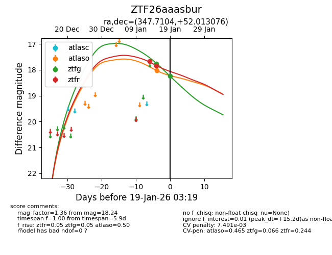
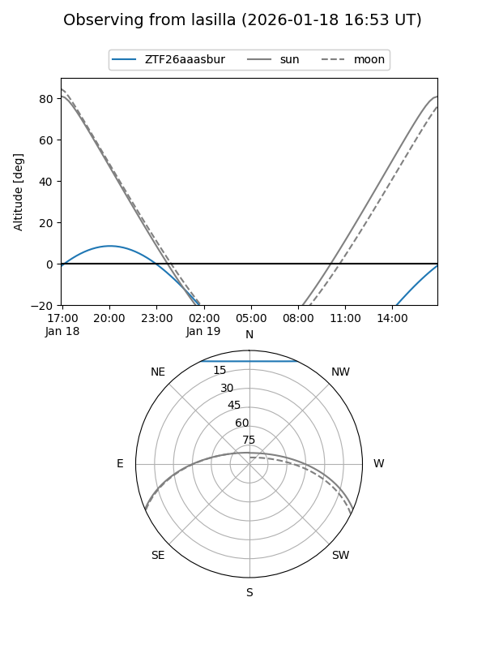
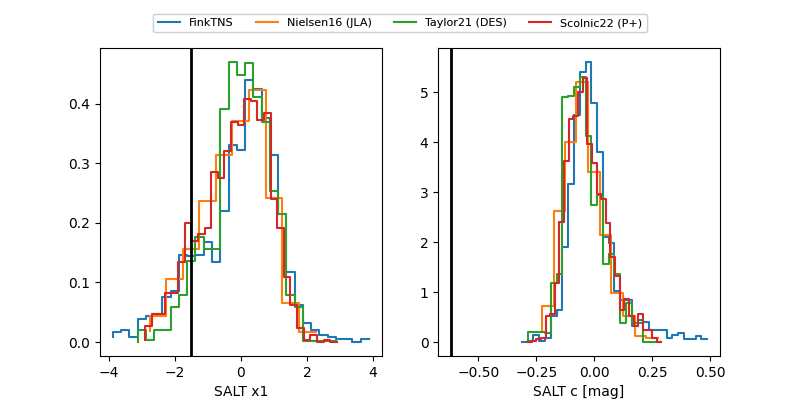

ZTF26aaasbur
Target ZTF26aaasbur at 2026-01-17 09:00
Aliases and brokers:
FINK: link
Lasair: link
ALeRCE: link
alt names
ZTF26aaasbur (ztf,fink_ztf)
Coordinates:
equatorial (ra, dec) = 347.7104,+52.01308
equatorial (HMS+DMS) = 23:10:50.49,+52:00:47.07
galactic (l, b) = (107.6223,-7.84311)
Flags:
Photometry:
last atlaso=18.03, ztfg=17.76, ztfr=17.85
1 atlaso, 1 ztfg, 2 ztfr detections
Lightcurve

Visibility


Additional plots
